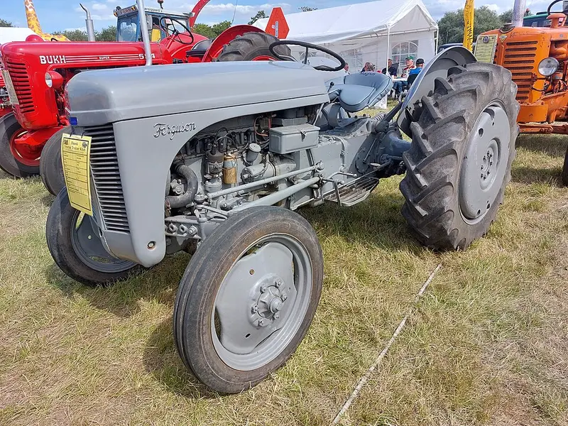
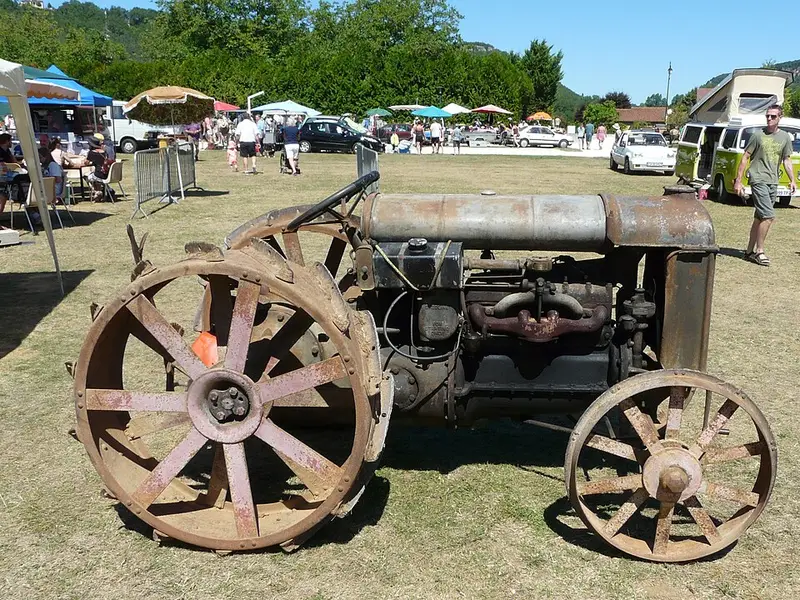
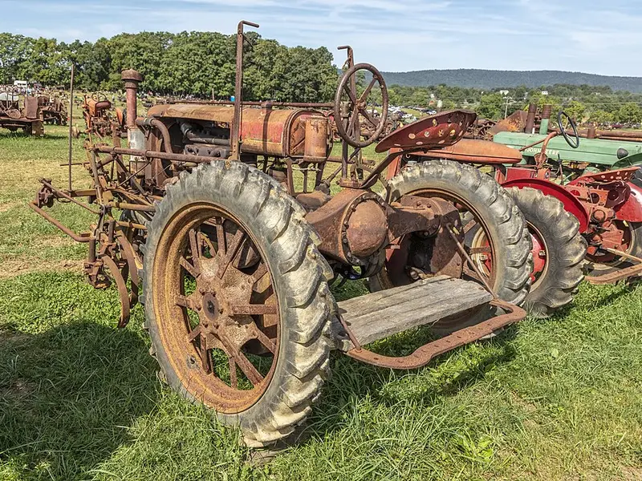
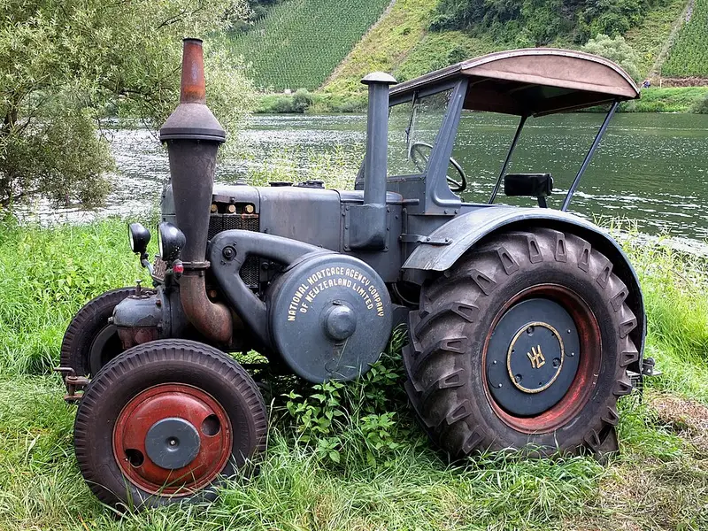
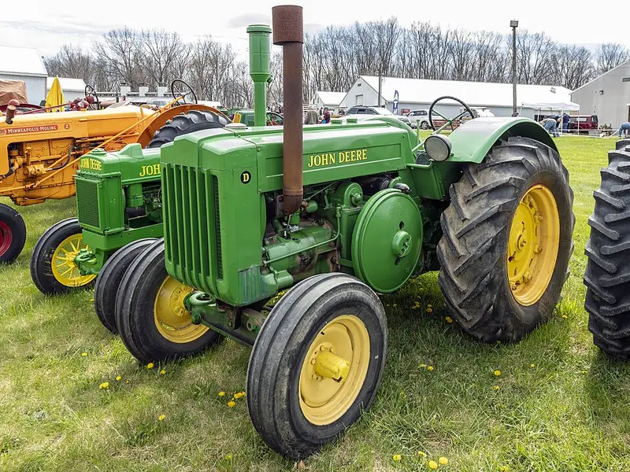
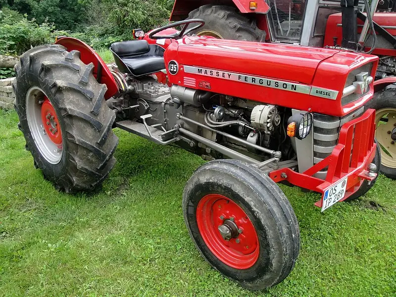
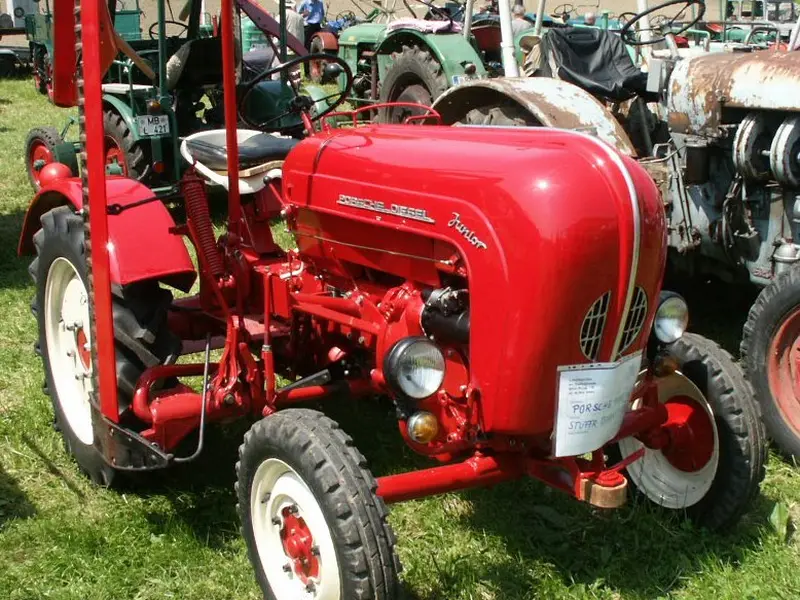
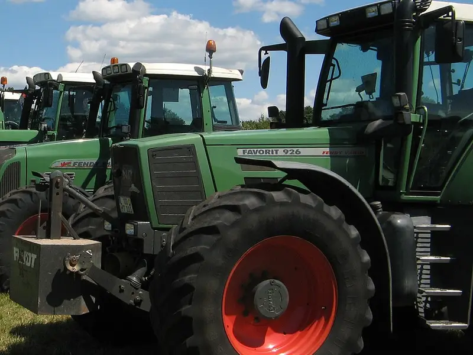
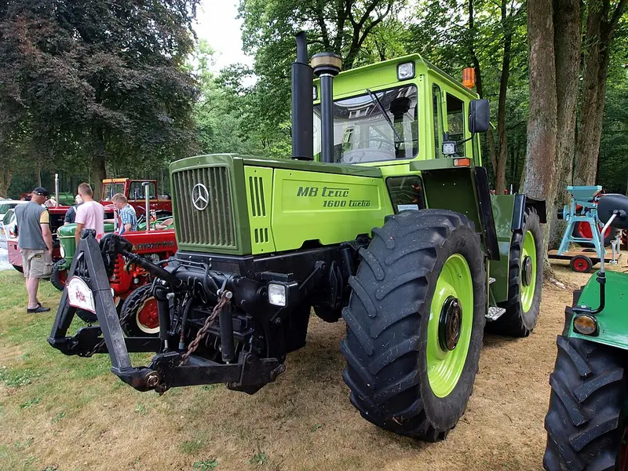
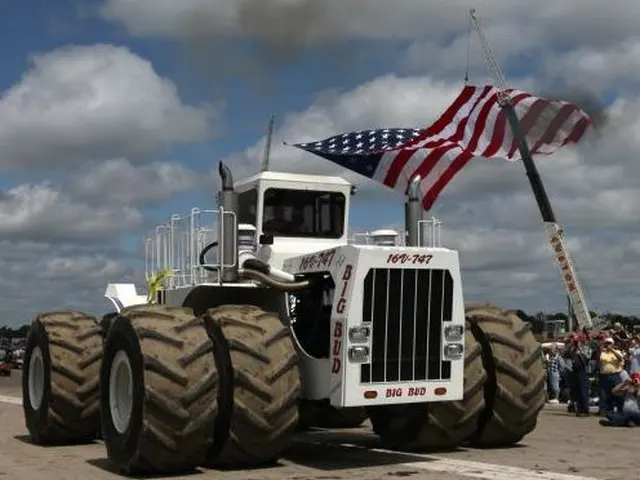

Le top 10 des légendes
-
1

Photo : Hjart · CC BY-SA 4.0 · Wikimedia Commons 1946Ferguson TE20, le « Petit Gris »
Il a démocratisé l'attelage trois points avec relevage hydraulique, devenu la norme mondiale. En France, il a mécanisé des milliers de petites exploitations après la guerre. Le tracteur le plus attachant de l'histoire.
-
2

Photo : Père Igor · CC BY-SA 4.0 · Wikimedia Commons 1917Fordson Model F
Le premier tracteur produit en grande série et vendu à un prix accessible. Ford y applique les méthodes de la Ford T : le cheval de trait commence à perdre sa place.
-
3

Photo : Acroterion · CC BY-SA 4.0 · Wikimedia Commons 1924Farmall Regular
Le premier vrai tracteur « polyvalent » : assez haut et étroit pour passer dans les rangs de cultures, il fait le labour, le binage et la récolte. Toute une catégorie de machines descend de lui.
-
4

Photo : Palauenc05 · CC BY-SA 4.0 · Wikimedia Commons 1921Lanz Bulldog
Un seul gros cylindre, un démarrage au chalumeau et ce « poc-poc » inimitable. Rustique, increvable, il avale presque tous les carburants. Copié partout, y compris en France avec les Vierzon.
-
5

Photo : Acroterion · CC BY-SA 4.0 · Wikimedia Commons 1923John Deere Model D
Le bicylindre surnommé « Johnny Popper » pour son bruit. Produit pendant une trentaine d'années, il a installé la marque au vert et jaune dans les fermes du monde entier.
-
6

Photo : Reise Reise · CC BY-SA 4.0 · Wikimedia Commons 1964Massey Ferguson 135
L'héritier du Petit Gris, vendu à des centaines de milliers d'exemplaires. Simple, réparable, on en voit encore tourner dans les cours de ferme soixante ans plus tard.
-
7

Photo : Späth Chr. (user ChiemseeMan) – cropped/edited by Liftarn · domaine public · Wikimedia Commons 1957Porsche-Diesel Junior
Le petit tracteur rouge signé Porsche, pensé pour les petites fermes. Devenu une icône de collection, il fait toujours sourire dans les rassemblements.
-
8

Photo : Dirk Ingo Franke · CC BY-SA 2.0 · Wikimedia Commons 1996Fendt Favorit 926 Vario
Le premier tracteur de série avec une transmission à variation continue. Plus de rapports à passer : la vitesse s'ajuste en douceur. Toute l'industrie a suivi.
-
9

Photo : AlfvanBeem · CC0 · Wikimedia Commons 1972MB-trac
Cabine au centre, quatre roues égales, outils à l'avant comme à l'arrière. Un concept à part qui annonçait les porte-outils modernes et garde une communauté de fans fidèles.
-
10

Photo : Myron Reynard · CC BY-SA 2.0 · Wikimedia Commons 1977Big Bud 16V-747
Le plus gros tracteur agricole jamais construit en exemplaire unique. Des roues plus hautes qu'un homme, un moteur de plus de 750 chevaux. Il travaille encore aujourd'hui.